Своя панель для Belgee X70
Нижняя панель, окно климата, центр управления и заставка для штатного ГУ. Всё основное делается прямо с панели, без перехода по экранам, в том числе поверх Android Auto.
Для ГУ с прошивкой SW0NL3B0411H5177.00115 (Android 5.1). Ставится и удаляется с флешки, системные файлы не трогает.
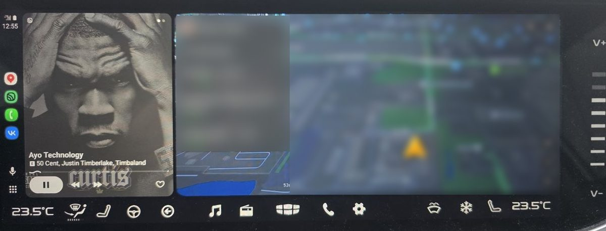
Что сделано и что работает
Сводка по всем функциям. Всё отмеченное «Проверено» работает в машине на прошивке 115. Если у вас что-то не так, напишите в чат клуба.
Panel X70
Своя нижняя панель вместо штатной. Значки в одном стиле, включённые подогревы всегда жёлтые, на сиденьях виден уровень.
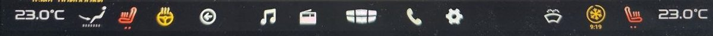
- Слева направо: температура водителя, обдув, сиденье, руль, «Назад», музыка, радио, логотип Geely, телефон, настройки, форсунки, зимний режим, сиденье пассажира, температура пассажира.
- Кнопка «Назад» прямо на панели, Back Button больше не нужен.
- Кнопки зимнего режима, темы приборки и «Назад» можно убрать в настройках.
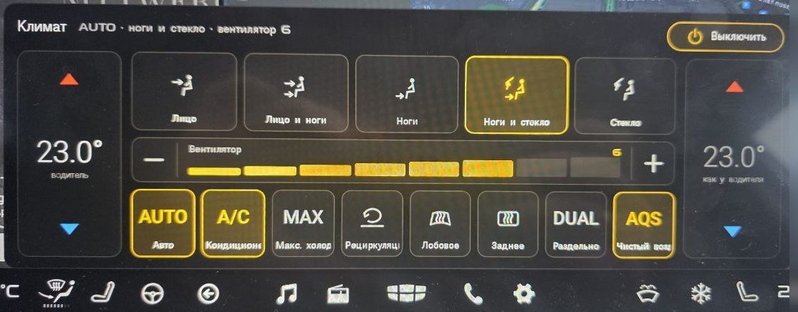
Окно климата с 1.20
долгое нажатие на значок обдува- Температура водителя и пассажира, 5 режимов обдува, вентилятор полоской и «−/+».
- AUTO, A/C, MAX, рециркуляция, лобовое и заднее стекло, DUAL, AQS, кнопка «Включить / Выключить».
- Ионизатор появляется, только если он есть в комплектации.
- Закрыть — нажать мимо окна или коротко на значок обдува.
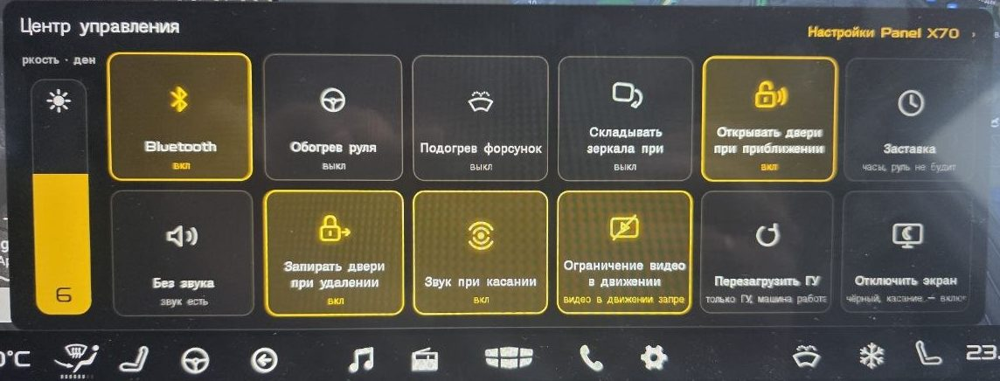
Центр управления с 1.14
долгое нажатие на логотип Geely- Всё со штатного экрана по свайпу влево: яркость, Bluetooth, без звука, звук при касании, видео в движении, зеркала, двери, обогрев руля, форсунки.
- «Перезагрузить ГУ» вторым нажатием.
- Новое в 1.21: «Заставка» и «Отключить экран».
- Нажатие на логотип при открытом окне просто закрывает его, Android Auto не пропадает (1.19).
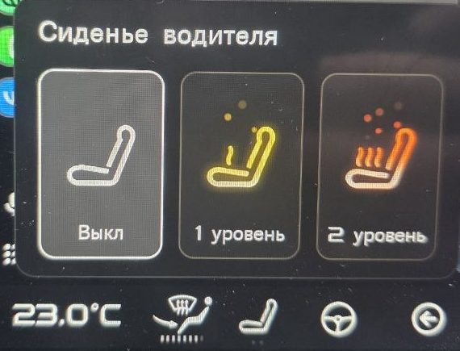
Подогрев сидений
удержание значка сиденья- Окно «Выкл / 1 / 2» с крупными сиденьями.
- Уровень виден на самой панели: первый — жёлтая волна, второй — три волны красно-оранжевым.
- Уровней столько, сколько у вашей машины.
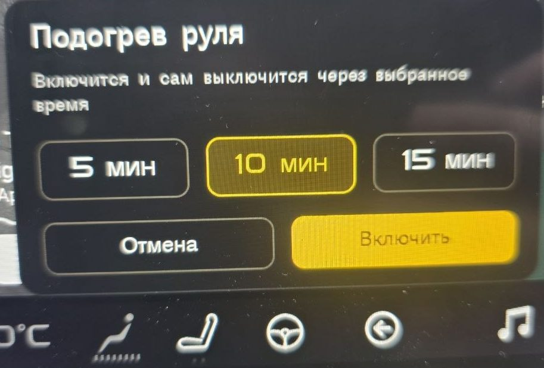
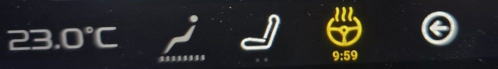
Подогрев руля с таймером
удержание значка руля- Включить на 5, 10 или 15 минут, отсчёт под значком.
- Потом подогрев выключится сам.
- Можно повесить на пустую кнопку руля.
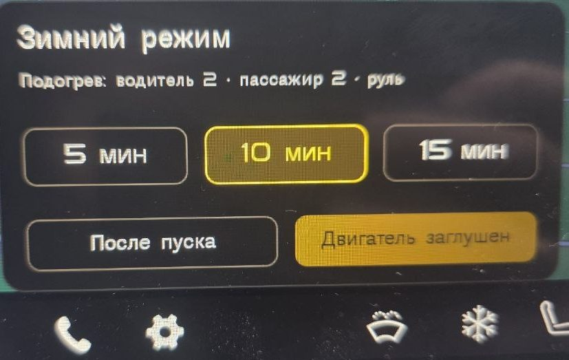
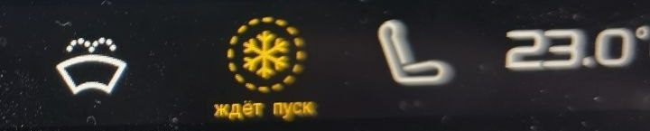
Зимний режим
значок снежинки- Сиденья и руль разом на 5, 10 или 15 минут.
- Двигатель заглушен — режим «ждёт пуск» и включится после старта.
- Подогревы включаются только при работающем двигателе и по очереди, с паузой в секунду, как рукой.
- Можно включать автоматически при каждом пуске, если за бортом холодно.
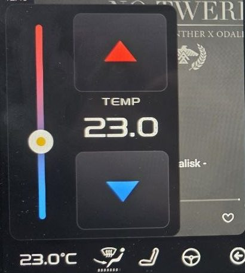
Окно температуры
нажатие на градусы- Красная стрелка вверх, синяя вниз, ползунок сбоку.
- Если DUAL выключен, пассажир меняет общую температуру.
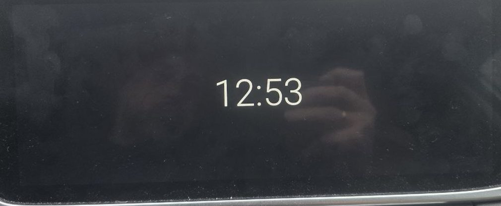
Экран с часами без пробуждения от руля с 1.18
кнопка питания- Штатно любая кнопка руля (громкость, треки) будит экран. С галочкой в настройках — нет.
- Разбудить: коснуться экрана или снова нажать кнопку питания.
- Задняя передача, звонок, выключение ГУ — экран сразу включается.
- Нужно полностью гасить экран? Это делает Экран X70 или плитка «Отключить экран» в центре управления.
Ещё в Panel X70
- «Не забудьте телефон в салоне» — живой голос сразу после остановки двигателя, если телефон подключён по Bluetooth (1.15).
- Bluetooth после запуска ГУ — всегда включён, всегда выключен, как в системе или спрашивать (1.13).
- Bluetooth-музыка сама — когда телефон подключил музыку, сразу открывается штатный плеер (1.16).
- Пустая кнопка на руле — подогрев руля, сиденье, зимний режим, «Назад» или тема приборки.
- Тема приборки S / C / E / D — кнопкой на панели или в настройках.
- Перезагрузка ГУ одной кнопкой вместо 15 секунд на сенсоре: перезапускается только ГУ, машина работает как обычно (1.13).
Настройки
Открываются из центра управления («Настройки Panel X70») или значком приложения.
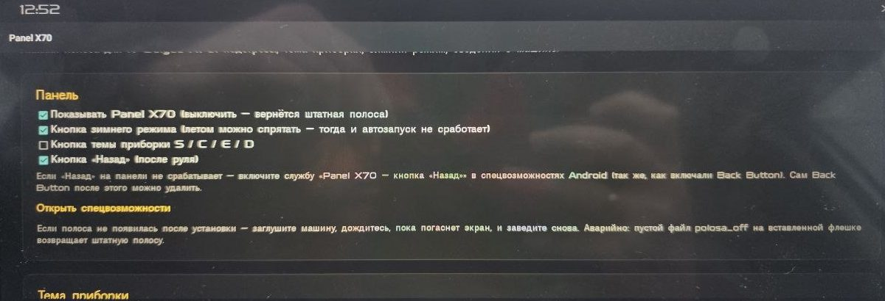
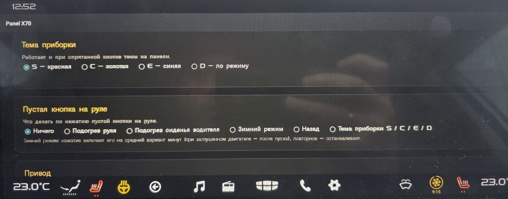
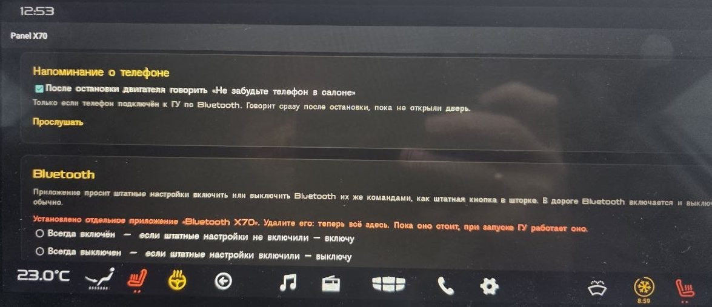
Экран X70 0.1
Отдельное маленькое приложение: что делать по кнопке питания. Режим выбирается в самом приложении.
- Отключить экран (по умолчанию) — чёрный экран, подсветка на минимум. Штатное «выключение» подсветку не гасит вовсе.
- Заставка с часами — часы и дата на чёрном.
- Как штатно — ничего не делает.
- Кнопки руля не будят. Будит касание или кнопка питания, яркость возвращается ваша, дневная или ночная.
- Задняя передача, звонок, выключение ГУ — экран сразу включается.
- Можно ставить вместе с Panel X70: тогда кнопкой питания управляет Экран X70.
Скачать
Ссылки всегда ведут на последнюю версию. Если на ГУ нет установщика APK, берите архив для флешки.
Panel X70 1.21
Нижняя панель, климат, центр управления, подогревы, заставка.
Экран X70 0.1
Кнопка питания гасит экран или включает заставку с часами.
Все версии и файлы: страница релизов.
Установка с флешки
Подходит для обоих приложений. Ставится поверх старой версии, удалять ничего не нужно.
Поставить или обновить
- Флешка в формате FAT32, лучше пустая.
- Распакуйте архив
…-install.zipв корень флешки: файлы и папка должны лежать сразу на ней, а не в отдельной папке. - Заведите машину, дождитесь загрузки экрана.
- Вставьте флешку (она должна быть первой и единственной).
- Готово, когда сами откроются настройки приложения. Флешку можно вынуть.
- Для Panel X70: заглушите машину, дождитесь, пока погаснет экран, и заведите снова.
Удалить
- Так же распакуйте
…-remove.zipв корень флешки и вставьте её в машину. - Готово, когда откроются штатные настройки ГУ.
Вернуть штатную панель без удаления
- Снимите галочку «Показывать Panel X70» в настройках.
- Или положите на флешку пустой файл
polosa_offи вставьте её.
Если стоят старые приложения
- Bluetooth X70 и Перезагрузка ГУ можно удалить: всё это теперь в Panel X70.
- WheelHeat удалите, если назначаете действие пустой кнопке руля, иначе сработают оба.
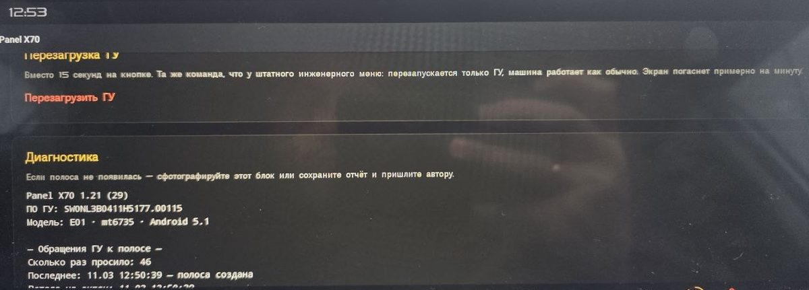
Если что-то не так
- Панель не появилась после установки — заглушите машину, дождитесь, пока погаснет экран, и заведите снова.
- В настройках Panel X70 внизу есть раздел «Диагностика»: версия, прошивка ГУ и что происходило. Сфотографируйте его или нажмите «Сохранить отчёт» и пришлите в чат клуба.
- «Назад» не срабатывает — включите службу «Panel X70 — кнопка Назад» в спецвозможностях Android (кнопка есть в настройках).
История версий
Коротко, что появлялось в Panel X70.
1.21 — «Заставка» и «Отключить экран» в центре управления
- Две новые плитки: заставка с часами и чёрный экран с подсветкой на минимум.
- Если стоит Экран X70, кнопкой питания управляет он.
1.20 — окно климата
- Долгое нажатие на значок обдува: весь климат в одном окне, включая AQS.
1.19 — логотип закрывает окна
- При открытом центре управления нажатие на логотип только закрывает его, Android Auto не пропадает.
1.18 — экран с часами не будится рулём
- Галочка в разделе «Экран с часами».
1.15–1.17 — напоминание о телефоне, Bluetooth-музыка
- «Не забудьте телефон в салоне» живым голосом.
- Автооткрытие Bluetooth-музыки.
1.13–1.14 — Bluetooth после запуска, перезагрузка ГУ, центр управления
- Отдельные приложения Bluetooth X70 и Перезагрузка ГУ вошли в Panel X70.
- Центр управления по долгому нажатию на логотип.
До 1.13 — сама панель
- Новые значки, уровни сидений, окно температуры, подогрев руля с таймером, зимний режим, кнопка «Назад», пустая кнопка руля.
Архив: отдельные приложения
Приложения, из которых выросла Panel X70. Если стоит Panel X70, они не нужны: всё это уже в ней. Выкладываем на всякий случай, например, если нужна только одна функция без своей панели.
Подогрев руля (WheelHeat) 1.0
Первое приложение: пустая кнопка на руле включает и выключает подогрев руля. С Panel X70 вместе не ставить, если назначаете пустую кнопку там, иначе сработают оба.
Bluetooth X70 0.2
Bluetooth после запуска ГУ: всегда включён, всегда выключен, как в системе или спрашивать. В Panel X70 с версии 1.13; если стоят обе, при запуске ГУ работает эта.
Перезагрузка ГУ 0.1
Перезагрузка ГУ одной кнопкой вместо 15 секунд на сенсоре. Перезапускается только ГУ, машина работает как обычно. В Panel X70 с версии 1.13.
Рабочий стол X70 0.1 · эксперимент
Свой рабочий стол: часы, карточка климата, избранное и все приложения сеткой. Пока обычное приложение со своим значком, штатный рабочий стол не заменяет. Дальше не развивается.
Устанавливаются так же, как основные: флешкой.